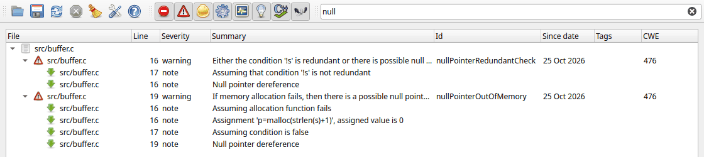
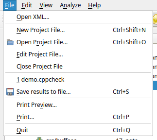
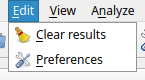
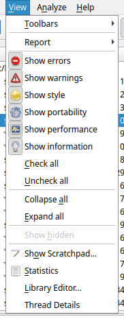
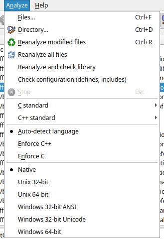
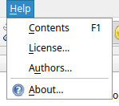

This page describes the parts of the main window and every command in the menus and toolbars.
From top to bottom the main window has:
The title bar shows the name of the project file that is open. You can drag the bar between the results list and the lower panel to give more space to either of them. The GUI remembers the window size, the column widths and the position of the bar.
The results are grouped by file. Each file is a top level item; click the arrow to expand it, or use View > Expand all. Each warning in a file can have child items called notes, which describe the path through the code that leads to the problem.
The columns are:
| Column | Meaning |
|---|---|
| File | The file of the warning. By default the path is shown relative to the project (see Show full path of files in the preferences and Root path in the project file). |
| Line | The line number. |
| Severity | error, warning, style, performance, portability, information, or note for the notes. See Severities. The icon in the File column shows the severity too. |
| Classification, Level, Guideline, Rule | Only shown when a compliance report type (Misra, Cert, Autosar) is selected in View > Report. See Report types. |
| Inconclusive | Shown when inconclusive warnings are enabled in the preferences. Marks warnings where Cppcheck is not sure. |
| Summary | A short description of the problem. |
| Id | The id of the checker message, for example
nullPointer. You need it for suppressions. The column can be
turned off in the preferences. |
| Since date | The date the warning was first seen. Only available for projects with a build dir; the date is kept from analysis to analysis as long as the warning is still there. This makes it easy to see which warnings are new. |
| Tags | Your own tag for the warning. See Tagging. |
| CWE | The Common Weakness Enumeration number of the problem, if there is one. |
Click a column header to sort by that column. Drag the edge of a column header to change its width.
Double-click a warning, or select it and press Enter, to open the file in your default editor at the line of the warning. You must configure the editor first in the preferences.
Right-click warnings to get a context menu. See The context menu.
When you select a warning, the Warning Details tab shows the id, the CWE number and the full message. Some messages are longer than the summary in the list and explain the problem in more detail. If the file was included from another file, it also shows which file included it.
Below the message, the code view shows the source file with the line of the warning highlighted. Select a note to see the line of the note. The code view is read only; use your editor to change the code. The colors of the code view can be changed in the preferences.
The Analysis Log tab shows which files were analyzed and with which configuration: the preprocessor defines, undefines, include paths and platform. Look here if the results are not what you expected, for example to check that the right include paths are used. Right-click the log to clear it or copy one or all entries.
If Show internal warnings in log is enabled in the preferences, internal debug warnings are shown here too.
If a critical error happens, for example a syntax error that stops the analysis of a file, a red message is shown above the results list.

The standard toolbar (left) has, from left to right: Open Project File, Save results to file, Reanalyze all files, Stop, Clear results, Preferences and About. These commands are described with the menus below.
The severity toolbar (right) has one toggle button for each severity: error, warning, style, portability, performance and information. When a button is pressed, warnings with that severity are shown. Release it to hide them. The last two buttons show or hide results from Cppcheck itself and results from Clang tools (Clang-Tidy). When you select a compliance report type, the buttons change to the classifications of that standard, for example Mandatory, Required and Advisory for Misra.
The quick filter field shows only warnings that contain the text you type. The text is searched (ignoring case) in the summary, the message, the id, the classification and the files and texts of the notes. Click the small cross in the field to clear the filter.

The toolbars can be turned on and off with View > Toolbars.

| Command | Description |
|---|---|
| Open XML... | Open a results file in XML format that was saved
earlier by the GUI or created with the command line tool
(cppcheck --xml ...). The current results are cleared. See
Opening results. |
| New Project File... | Create a new project file. First you choose the file name, then the project file dialog opens. When you click OK the analysis starts. |
| Open Project File... | Open an existing project file
(*.cppcheck). If the project has a build dir with results
from an earlier analysis, those results are shown. Otherwise the analysis
starts. |
| Edit Project File... | Change the settings of the open project. When you click OK, the project file is saved and the code is analyzed again. |
| Close Project File | Close the project and clear the results. You must close the project before you can analyze files or folders without a project. |
| (recent projects) | The project files you opened recently. Click one to open it. |
| Save results to file... | Save the results as XML, text or CSV. See Saving results. |
| Print Preview... / Print... | Preview or print the results. See Printing. |
| Quit | Close the GUI. If an analysis is running, you are asked if you want to stop it. |

| Command | Description |
|---|---|
| Clear results | Remove all results from the list. If the project has a build dir, the cached analysis results in the build dir are deleted too, so the next analysis analyzes every file from scratch. |
| Preferences | Open the preferences dialog. |

| Command | Description |
|---|---|
| Toolbars | Show or hide the standard toolbar, the severity toolbar (Categories) and the quick filter. |
| Report | Choose how warnings are classified: Normal (Cppcheck severities) or according to a coding standard: Autosar, Cert C, Cert C++, Misra C, Misra C++ 2008 or Misra C++ 2023. See Report types. |
| Show errors ... Show information | The same as the buttons in the severity toolbar. |
| Check all / Uncheck all | Show or hide all severities at once. |
| Collapse all / Expand all | Collapse or expand all files and warnings in the results list. |
| Show hidden | Show the warnings again that you have hidden with the context menu. Only enabled when there are hidden warnings. |
| Show Scratchpad... | Open the scratchpad, where you can type or paste code and analyze it. |
| Statistics | Show statistics about the project and the last analysis. |
| Library Editor... | Open the library editor to create or change a library configuration (.cfg) file. |
| Thread Details | Show what each analysis thread is doing right now. See Thread details. |

| Command | Description |
|---|---|
| Files... | Analyze one or more files without a project. You can also select a compile database, a Visual Studio solution or project, or a Borland C++ Builder 6 project here. See Analyzing without a project. |
| Directory... | Analyze all source files in a folder and its subfolders, without a project. |
| Reanalyze modified files | Analyze again only the files that changed since the last analysis in this session, including files that include a changed header. This works for files and folders you selected with Files... or Directory... and for projects that list their paths in the project file. For projects that import a compile database or a Visual Studio project, use Reanalyze all files instead. |
| Reanalyze all files | Analyze all files again. For a project with a build dir, unchanged files are not analyzed again; their cached results are used. |
| Reanalyze and check library | Analyze the project again and report functions and types for which Cppcheck has no configuration. Use it to find out what is missing in your library configurations. See Checking the library configuration. |
| Check configuration (defines, includes) | Analyze the project again and report problems in the configuration, such as include files that can not be found. Use it when you set up a new project. |
| Stop | Stop the running analysis (Esc). Results found so far are kept. |
| C standard / C++ standard | The language standard used for files when the standard is not known in another way (for example from an imported project). |
| Auto-detect language / Enforce C++ / Enforce C | By default the
language of each file is chosen from its file extension: .c
files are C and .cpp, .cc, .cxx and
similar are C++. Choose Enforce C++ or Enforce C to analyze
all files as that language, for example if your C++ code is in
.c files. |
| Native ... Windows 64-bit | The platform to use when the project does not choose a platform, or when you analyze without a project. Native is the platform you run Cppcheck on. See Platform. |

| Command | Description |
|---|---|
| Contents | Open this help (F1). |
| License... | Show the license of Cppcheck (GNU GPL v3). |
| Authors... | Show the people who have contributed to Cppcheck. |
| About... | Show the version of Cppcheck. |
Cppcheck Premium also shows EULA... in this menu.
| Shortcut | Command |
|---|---|
| Ctrl+Shift+N | New Project File |
| Ctrl+Shift+O | Open Project File |
| Ctrl+S | Save results to file |
| Ctrl+P | |
| Ctrl+Q | Quit |
| Ctrl+F | Analyze files |
| Ctrl+D | Analyze directory |
| Ctrl+R | Reanalyze modified files |
| Esc | Stop the analysis |
| F1 | Help |
| Enter | Open the selected warning in the default editor |